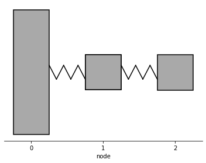
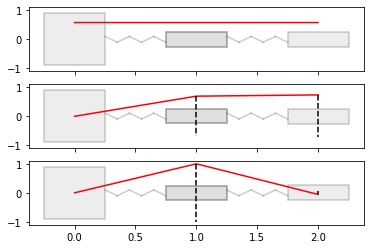
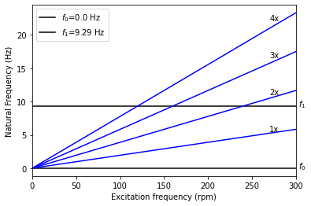
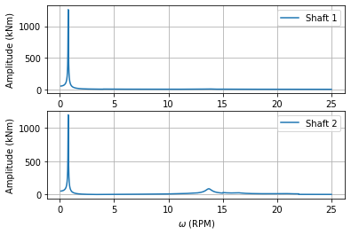

Modal analysis and steady-state forced response calculation example
Based on the article “Dynamic Torque Analysis of a Wind Turbine Drive Train Including a Direct-Driven Permanent-Magnet Generator” [1].
[1]:
import numpy as np
import opentorsion as ot
[2]:
def generator_torque(rpm):
"""
Generator torque as a function of rotor rotating speed.
"""
rated_T = 2.9e6
if rpm < 4:
torque = 0
elif rpm < 15:
m = (0.5 - 0.125) / (15 - 4) * rated_T
b = 0.5 * rated_T - m * 15
torque = m * rpm + b
elif rpm < 22:
P = rated_T * 15
torque = P / rpm
else:
torque = 0
return torque
[3]:
def get_windmill_excitation(rpm):
"""
Cogging torque and torque ripple as harmonic excitation.
(Table III in [1])
"""
f_s = rpm
vs = np.array([4, 6, 8, 10, 12, 14, 16])
omegas = 2 * np.pi * vs * f_s
rated_T = 2.9e6
amplitudes = np.array(
[0.0018, 0.0179, 0.0024, 0.0034, 0.0117, 0.0018, 0.0011]
) * generator_torque(rpm)
amplitudes[4] += rated_T * 0.0176
return omegas, amplitudes
[4]:
def forced_response():
"""
First a model of a windmill is created as a system of three lumped masses
connected by two shafts. The assembly is given harmonic excitation as
input. Finally, the system response is calculated and plotted.
"""
# Parameters of the mechanical model
k1 = 3.67e8 # Nm/rad
k2 = 5.496e9 # Nm/rad
J1 = 1e7 # kgm^2
J2 = 5770 # kgm^2
J3 = 97030 # kgm^2
# Creating assembly
shafts, disks = [], []
disks.append(ot.Disk(0, J1))
shafts.append(ot.Shaft(0, 1, None, None, k=k1, I=0))
disks.append(ot.Disk(1, J2))
shafts.append(ot.Shaft(1, 2, None, None, k=k2, I=0))
disks.append(ot.Disk(2, J3))
assembly = ot.Assembly(shafts, disk_elements=disks)
M, K = assembly.M, assembly.K # Mass and stiffness matrices
C = assembly.C_modal(M, K, xi=0.02) # Damping matrix
# Modal analysis
A, B = assembly.state_matrix(C)
omegas_undamped, omegas_damped, damping_ratios = assembly.modal_analysis()
# Print eigenfrequencies.
# The list contains each eigenfrequency twice: e.g. eigenfrequencies = [1st, 1st, 2nd, 2nd, 3rd, 3rd, ...]
print("Eigenfrequencies: ", omegas_undamped.round(3))
# Initiate plotting tools calling Plots(assembly)
plot_tools = ot.Plots(assembly)
# Plot eigenmodes, input number of eigenmodes
plot_tools.plot_assembly()
plot_tools.plot_eigenmodes(modes=3)
plot_tools.plot_campbell(frequency_range_rpm=[0, 300], num_modes=2)
# Steady-state forced response analysis
VT_element1 = []
VT_element2 = []
# The excitation depends on the rotational speed of the system.
# Here the response is calculated at each rotational speed.
# The responses at each rotational speed are summed to get the total response.
for rpm in np.linspace(0.1, 25, 5000):
omegas, amplitudes = get_windmill_excitation(rpm)
excitations = np.zeros((M.shape[0], omegas.shape[0]), dtype="complex128")
excitations[2] = amplitudes # Excitation acts on the generator side
T_vib = assembly.vibratory_torque(excitations, omegas, k_shafts=np.array([k1, k2]), C=C)
VT_element1.append(np.sum(np.abs(T_vib[0])))
VT_element2.append(np.sum(np.abs(T_vib[1])))
T_e = np.array(
[np.array(VT_element1), np.array(VT_element2)]
) # Total response (shaft torque)
plot_tools = ot.Plots(assembly)
plot_tools.torque_response_plot(np.linspace(0.1, 25, 5000), T_e, show_plot=True)
return
[5]:
forced_response()
Eigenfrequencies: [ 0. 0. 58.34 58.34 1034.115 1034.115]




[1] J. Sopanen, V. Ruuskanen, J. Nerg and J. Pyrhonen, “Dynamic Torque Analysis of a Wind Turbine Drive Train Including a Direct-Driven Permanent-Magnet Generator,” in IEEE Transactions on Industrial Electronics, vol. 58, no. 9, pp. 3859-3867, Sept. 2011, https://doi.org/10.1109/TIE.2010.2087301.